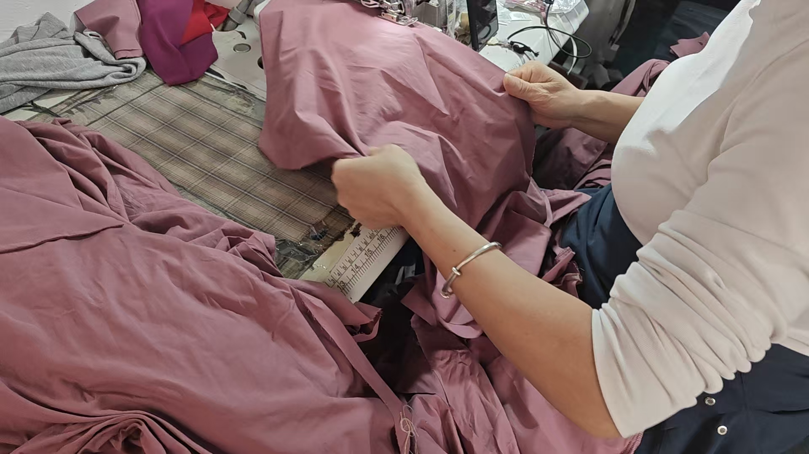

Technology has made the early stages of fashion development faster. It has not made the physical garment less demanding.
Designers can now explore more ideas, create more visual references and share them more quickly than ever. Factories can use digital files, automated cutting and modern sewing equipment to improve accuracy and efficiency. Yet a dress can still behave unexpectedly when the fabric is cut. A collar can still need a second pattern revision. A sample can still be approved before a production run reveals that a seam, trim or measurement needs closer control.
For independent fashion brands, the useful question is not whether a manufacturer owns the newest equipment. It is how that equipment, the people using it and the factory’s development process work together to reduce avoidable problems. Technology is most valuable when it supports better decisions, not when it replaces them.

AI changes design exploration, not garment behaviour
AI tools are useful for exploring colour directions, print concepts, silhouette variations and mood boards. They can help a small team visualise more possibilities in less time and bring clearer references to a supplier conversation.
What AI cannot do is tell a brand how a fabric will drape on a real body, how a seam will behave after pressing or whether a closure will sit correctly when the garment is worn. A generated image can suggest a garment. It cannot replace a pattern, a sample or a fitting.
This gap matters most in design-led womenswear, where a small change in proportion or material can transform the result. A reference image may show a fluid trouser, but the intended effect might depend on a particular weave, weight and finish. A jacket may look structured in a photograph, yet the fabric specified for production may be too soft to hold the shoulder shape.
AI and visual tools can speed up exploration, mood boards, colour stories and early design communication.
Fabric trials, pattern development, sample fittings and wear tests show whether the idea works in three dimensions.
Approved specifications, measurement checks and consistent material sourcing keep successive runs aligned.
A manufacturer can add value early by asking practical questions before a design is locked. Which fabric is being considered? How should the garment fit across the size range? Are the seams, linings and closures appropriate for the intended shape? What production method will preserve the details that make the style distinctive?
These conversations are especially useful for smaller labels that may not have a full technical team. A clear discussion at the start can prevent an attractive design reference from becoming an expensive sample cycle later.
What better equipment can—and cannot—solve
New machinery can improve speed, accuracy and consistency. Automated cutting can reduce errors in repetitive shapes. Specialist machines can handle particular seams, hems or decorative details. Better lighting, tension control and machine maintenance can all support cleaner workmanship.
But equipment only creates an opportunity. The result depends on how it is used.
- A precise cutting machine still needs an accurate pattern and correctly prepared fabric.
- A specialist sewing machine still depends on the operator’s judgement and the correct settings.
- A digital production file is only useful if the factory and brand are working from the same approved version.
- Faster production does not compensate for an unresolved fit or construction issue.
Different fabrics also demand different handling. A lightweight viscose dress, a structured cotton shirt, a lined wool jacket and a stretch jersey top cannot be treated as variations of the same production problem. Machine choice, needle, thread, tension and pressing method all change with the material and construction.
Ask how the factory decides which equipment and settings to use for your specific fabric, construction and finishing requirements.
From approved sample to bulk production
An approved sample is a milestone, not a guarantee. Bulk production introduces variables that a single sample may not reveal: fabric shrinkage across a full roll, shade variation between lots, cutting accuracy across many layers, machine tension, operator consistency and the cumulative effect of small measurement differences.
The transition from sample to bulk is where a manufacturer’s process becomes visible. A strong process does not rely on the same sample maker completing every garment. It creates a production reference that other team members can follow.
That reference should include the approved sample, final measurements and tolerances, fabric and trim details, construction notes, labelling and packing requirements. It should also record any changes agreed after the sample was reviewed. Without a controlled reference, different operators can make reasonable but different interpretations of the same instruction.
| Risk area | What should be confirmed before bulk |
|---|---|
| Fabric | Composition, weight, shade, shrinkage, hand feel and available quantity. |
| Pattern and fit | Approved size measurements, grading and tolerance range. |
| Construction | Seam type, stitch density, lining, interlining, closures and finishing. |
| Trims and branding | Labels, hardware, packaging and placement confirmed against the approved sample. |
| Inspection | Measurement checks, workmanship standards and the point at which production is approved. |
For premium womenswear, these checks are not administrative extras. They protect the qualities the customer will notice: a neckline that sits cleanly, a waistband that holds its shape, a hem that falls evenly and a fabric that feels as intended.
What brands should look for in a manufacturer
Technology has made it easier to find factories online. It has not made it easier to judge which factory is right for a particular product. That judgment still depends on evidence, communication and the quality of the development process.
When evaluating a clothing manufacturer, look beyond the equipment list and the unit price. Consider how the factory responds to the following:
Can it discuss the garment, not just the category?
A useful manufacturer can explain how it would approach the specific silhouette, fabric and construction. It should be able to identify likely risks and suggest practical alternatives rather than simply confirming that it can make “womenswear”.
Does it have a real sampling process?
Ask who reviews the sample, how comments are recorded and what happens between the first sample and final approval. A structured process is more reassuring than a promise that the first sample will be perfect.
Can it support small-batch production without hiding the trade-offs?
Smaller runs can help a brand test a style, but fabric minimums, trim quantities, setup costs and delivery timing still apply. A good partner explains these constraints clearly so the brand can make an informed decision.
How does it control consistency?
Look for a clear approach to approved samples, measurement checks, fabric verification and inspection. Ask how the factory handles a reorder and what happens if a material is discontinued or a shade cannot be matched.
Does communication remain clear when problems arise?
Every development project has questions. What matters is whether the factory raises them early, provides evidence and offers a workable next step. A fast reply that avoids the real issue is less useful than a considered reply that resolves it.
How CYNCHO is improving
CYNCHO is a womenswear manufacturer in Dongguan, China, established in 2010. We work with fashion brands on garment development, fabric sourcing, sampling and bulk production. Our wholly-owned woven factory supports dresses, tops, shirts, trousers, jackets and selected outerwear, while our invested knitwear resources extend our work to cardigans, pullovers and knitted tops.
Our approach to improvement is practical. We invest in production equipment and sampling capability, but we also focus on the parts of manufacturing that determine whether a style can be repeated: fabric evaluation, pattern adjustment, construction review and clear production specifications.
We understand that brands may already work with other suppliers. CYNCHO can be used as an additional partner for selected styles, new development or production that needs another route. We prefer to review a specific garment, its fabric direction and target quantity before recommending a production approach.
CYNCHO is SEDEX audited. Where relevant to a project, our suppliers can provide GOTS, GRS or RWS documentation for the specific material and order. Certification should always be confirmed against the actual fibre and supply chain before it is used in customer-facing claims. More detail is available on our certifications and compliance page.
The technology that matters is useful technology
AI and digital tools will continue to change how brands explore ideas and communicate with suppliers. Machinery will continue to improve. The most useful technology, however, is the kind that helps a brand make a better decision about a real garment.
That means faster access to a fabric answer, a clearer sample review, a more reliable measurement record or a production issue identified before it reaches the customer. It does not mean treating a digital image as a finished design or assuming that new equipment automatically produces better clothing.
When choosing a manufacturing partner, look for evidence of how the factory thinks, samples, communicates and controls production. The best partner is not necessarily the one with the longest technology list. It is the one whose equipment, experience and process give your specific collection a clearer route to a well-made garment.
Develop your next collection with CYNCHO
Looking for a clothing manufacturer in China?
Whether you need help with sampling, fabric sourcing, woven womenswear or small-batch production, tell us about your brand and what you are looking to develop.
Contact our team